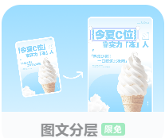

用美图设计室改图片文字：不用 PS，也能把截图/海报里的字换成新字
场景：手头有一张截图、海报或 PPT 配图，上面的文字需要改掉——可能是把旧日期换成新日期，可能是把示例文案换成自己的内容，也可能是把英文改成中文。以前这种活只能开 PS，找字体、抠图、补背景，半小时起。
工具
操作步骤
- 打开网站，上传需要改字的图片。
- 在 AI 作图或编辑功能里找到「改字」/「替换文字」入口（通常在图片编辑或 AI 重绘区域）。
- 框选或涂抹要修改的文字区域，输入你想换成的文字。
- AI 会自动匹配原图的字体风格、颜色、透视和背景纹理，生成新图。
- 不满意就重试一次，通常 2-3 次就能得到可用结果。
效果
对于背景不太复杂的文字替换，基本能做到「看不出改过的痕迹」。最省时间的是不用找原字体、不用手动修补背景，几分钟就能出图。
适合谁
- 做课程海报、活动海报，需要快速改标题或日期
- 做 PPT，想改一张截图里的文字来适配当前主题
- 不会 PS 或不想为了改几个字打开设计软件
注意点
- 背景越复杂、文字越大、字体越特殊，AI 匹配效果越不稳定，可能需要多试几次。
- 中文支持整体可用，但艺术字、书法字类的替换成功率相对低一些。
- 免费额度足够日常少量使用，批量处理或高清下载可能需要登录或付费。
经验小结
把"改图"放进更大的设计工作流里，我沉淀出一条更顺的路子，分两步：
- 先用大模型出"素材与结构"：比如用 ChatGPT 生成对应的背景图，以及HTML / UI 结构示意图——这一步只负责把"画面和布局长什么样"想清楚。
- 再进设计工具手工落地：把素材导进 稿定设计 gaoding.com ↗、美图设计室（designkit）里，由人手工排版、换字、调细节，最终成稿。其中稿定设计的「图文分层」功能尤其省事——点一下，系统会自动把背景与文字分离开，改字时不用重新抠图补背景。

这么做的关键好处是一切可控：AI 出创意和底图，人把住最终质量。反过来，如果直接让大模型"一口气把图文都生成出来"，尤其是英文文字经常会出现乱码、错字、假字，返工反而更费时间。
📌 以上为 2026-08-06 补充的经验小结。